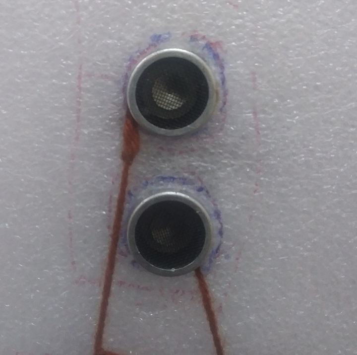

Authors
Kitale Doreen, dkitale@cis.mak.ac.ug
Watkidog Joachim, jwatkidog@cis.mak.ac.ug
Locha Derrick, dlocha@cis.mak.ac.ug
Odong Nicholas, nodong@cis.mak.ac.ug
Makerere University
Kampala, Uganda
Overview
With the rapid developments happening around Uganda, many people are transitioning from the traditional pit latrines to modern toilets, which are either connected to the public sewerage system, or to a septic tank system. This project focuses on the septic tank system.
A septic tank is an underground wastewater treatment structure made of concrete, fiberglass, or plastic through which domestic wastewater (sewage) flows for basic treatment. They use a combination of nature and proven technology to treat wastewater from household plumbing produced by bathrooms, kitchen drains, and laundry. Waste that is not decomposed must eventually be removed from the septic tank in time. Otherwise the septic tank fills up and wastewater containing undecomposed material discharges directly to the drainage field. This is detrimental to the environment; causes bad smell, diseases, and the system itself clogs, thus requiring expensive repairs.
This project (A Smart Septic Tank Monitoring System), is meant to solve this problem. This system is to be installed within the septic tank to monitor the level of waste in the tank. The system makes use of an ultrasonic sensor that uses sound waves to keep track of the current level of waste, and a GSM module to send updates to the concerned individuals when the septic tank is almost and when full, to prevent issues of overflow and discomfort to the environment.
PROJECT GOALS
General Objective
To develop a Smart Septic Tank Monitoring System, that will be used to track the level of waste in the septic tank, and prevent overflow.
Specific Objectives
- To analyze the current septic tank monitoring systems and determine their weaknesses.
- To design a more convenient and flexible septic tank monitoring system.
- To implement the system.
- To test and validate the system.
REQUIREMENTS
Non Functional Requirements
- The system must be able to measure the level of waste in the septic tank at all times.
- The system must send data collected from the septic tank to the server.
- The system must send a waning message when the septic tank is almost full i.e. when it has reaches 80% of the tank.
- The system must send the last message when the septic tank has reached 95% i.e. considered to be full.
- The system must shut down after sending the last message.
Functional Requirements
- The system is portable. It can easily be transported from one place to another, especially when the customer is in a remote place.
- The system is scalable, i.e. can easily be modified.
- The system is easy to use and does not require regular maintenance.
- Response - The user is able to receive the messages indicating the status of the septic tank.
PROJECT DESIGN
Architectural Design

Main components
The ultrasonic sensor
It measures the level of waste in the septic tank by transmitting sound waves of low frequency (40Hz), which are reflected back from the bottom of the septic tank to indicate the distance from the waste and top of the tank.
The GSM module
The GSM module is used for sending messages to the specified mobile contact, and also to send data to the ThinkSpeak server.
Credits: CS19 Group 14:Joachim, Doreen, Derrick